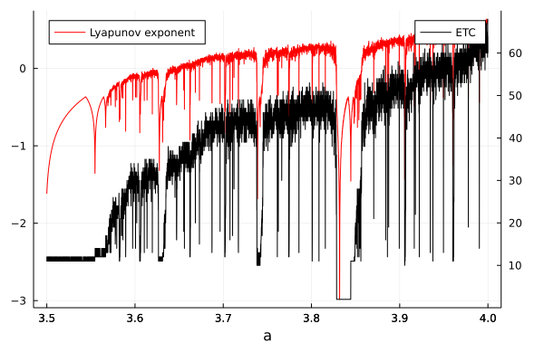

Compression complexity
Interface
CausalityTools.ComplexityMeasures.compression_complexity — FunctionRegular compression complexity
compression_complexity(x, algorithm) → NCompute the compression complexity of the pre-binned/pre-symbolized (integer-valued) univariate time series x using the given algorithm.
compression_complexity(x::Dataset, algorithm, alphabet_size::Int) → NMultivariate integer time series x, given as Datasets, are first transformed into a 1D symbol sequence before computing compression complexity. This transformation assuming that each variable xᵢ ∈ x was symbolized using the same alphabet_size. The resulting 1D symbol sequence is (in this implementation) not correct if different alphabet sizes are used, so ensure during pre-processing that the same alphabet is used (e.g. alphabet_size = 2 for a binary time series, and alphabet_size = 5 for a five-box binned time series).
Examples
Quantifying the compression complexity of a univariate symbol sequence using the EffortToCompress algorithm.
compression_complexity([1, 2, 1, 2, 1, 1, 1, 2], EffortToCompress())
# output
5.0Multivariate time series given as Datasets also work, but must be symbolized using the same alphabet.
x = [1, 2, 1, 2, 1, 1, 1, 2]
y = [2, 1, 2, 2, 2, 1, 1, 2]
alphabet_size = 2
compression_complexity(Dataset(x, y), EffortToCompress(), alphabet_size)
# output
7.0Sliding window estimators automatically handle window creation, and returns a vector of complexity measures computed on each window.
using Random; rng = MersenneTwister(1234);
x = rand(rng, 0:1, 100)
alg = EffortToCompress(normalize = false)
sw = ConstantWidthSlidingWindow(alg, width = 25, step = 15)
compression_complexity(x, sw)
# output
5-element Vector{Float64}:
12.0
14.0
14.0
14.0
11.0Joint compression complexity
compression_complexity(x::AbstractVector, y::AbstractVector, algorithm) → N
compression_complexity(x::Dataset, y::Dataset, algorithm, ax::Int, ay::Int) → NIf a two time series y is provided, compute the joint compression complexity using alphabet size ax for x and alphabet size ay for y.
x and y must be either both integer-valued vectors, or both Datasets (potentially of different dimensions). If computing the joint compression complexity between a univariate time series and a multivariate time series, simply wrap the univariate time series in a Dataset.
Examples
Joint compression complexity between two time series:
using Random; rng = MersenneTwister(1234);
x = rand(rng, 0:2, 100)
y = rand(rng, 0:2, 100)
alg = EffortToCompress(normalize = true)
compression_complexity(x, y, alg)
# output
0.2222222222222222For multivariate time series, we must specify the alphabet size for each variable to ensure that results are correct.
# Multivariate time series X has variables encoded with a 2-letter alphabet,
x1 = [1, 1, 0, 1, 1, 0, 1, 0, 1, 1, 0]
x2 = [1, 1, 0, 1, 1, 0, 1, 1, 1, 1, 0]
X = Dataset(x1, x2)
# Multivariate time series Y has variables encoded with a 3-letter alphabet
y1 = [1, 1, 1, 0, 0, 0, 0, 1, 1, 1, 0]
y2 = [2, 2, 0, 2, 2, 2, 2, 2, 1, 1, 2]
y3 = [2, 2, 0, 2, 2, 2, 1, 2, 1, 1, 2]
Y = Dataset(y1, y2, y3)
alg = EffortToCompress(normalize = true)
compression_complexity(X, Y, alg, 2, 3)
# output
0.9Returns
See individual algorithms for details on their return values. A Vector of compression complexities is returned if a sliding window algorithm is used - one value per window. ```
See also: EffortToCompress, EffortToCompressSlidingWindow.
Algorithms
CausalityTools.ComplexityMeasures.EffortToCompress — TypeEffortToCompress(; normalize = false)The effort-to-compress (ETC; Nagaraj et al., 2013)[Nagaraj2013] algorithm quantifies the compression complexity of a time series.
If applied to two time series, the (bivariate) joint ETC as described in [Kathpalia2019] can also be computed.
Normalization
If normalize == false, then computes the number of compression steps N it takes for the symbol sequence to reach zero entropy (either a constant sequence, or a length-1 sequence).
For a length-N sequence, the maximum number of possible compression steps is N-1. If normalize == true, then the ETC value is normalized to N-1, yielding a number on [0, 1], where 0 indicates minimal compression complexity and 1 indicates maximal compression complexity.
Example
Below is a reproduction of figure 3 in Nagaraj et al. (2013)[Nagaraj2013], which compares the (approximate) Lyapunov exponent and compression complexity (ETC) of 200-pt long logistic map time series with varying bifurcation parameters.
For ETC, the time series is symbolized to a binary time series before analysis. Lyapunov exponents are estimated directly on the (non-symbolized) time series.
using CausalityTools, Plots, StatsBase, Measures
# Approximation to the Lyapunov exponent for a time series x, from Nagaraj (2013)
function lyapunov(x, a)
L = length(x)
lyp = 0.0
for i in 2:length(x)
lyp += log(2, abs(a - 2*a*x[i]))
end
return lyp / L
end
coeffs = 3.5:0.0001:4.0
ls = zeros(length(coeffs))
etcs = zeros(length(coeffs))
for (i, a) in enumerate(coeffs)
sys = logistic2_unidir(r₁ = a, c_xy = 0.0, σ = 0.0)
# Generate time series and compute approximate Lyapunov exponents
x = trajectory(sys, 200, Ttr = 10000)[:, 1]
ls[i] = lyapunov(x, a)
# Symbolize and compute effort-to-compress
y = [xᵢ > 0.5 ? 1 : 0 for xᵢ in x]
etcs[i] = compression_complexity(y, EffortToCompress(normalize = false))
end
plot(xlabel = "a",
legend = :topleft,
right_margin = 10mm,
bottom_margin = 5mm)
plot!(coeffs, ls .- mean(ls), label = "Lyapunov exponent", c = :red)
plot!(twinx(), coeffs, etcs, label = "ETC", axis = :right, c = :black)┌ Warning: Skipped xaxis arg right
└ @ Plots ~/.julia/packages/Plots/lW9ll/src/axes.jl:76
┌ Warning: Skipped yaxis arg right
└ @ Plots ~/.julia/packages/Plots/lW9ll/src/axes.jl:76
┌ Warning: Skipped zaxis arg right
└ @ Plots ~/.julia/packages/Plots/lW9ll/src/axes.jl:76
- Kathpalia2019Kathpalia, A., & Nagaraj, N. (2019). Data-based intervention approach for Complexity-Causality measure. PeerJ Computer Science, 5, e196.
- Nagaraj2013Nagaraj, N., Balasubramanian, K., & Dey, S. (2013). A new complexity measure for time series analysis and classification. The European Physical Journal Special Topics, 222(3), 847-860.
- Kathpalia2019Kathpalia, A., & Nagaraj, N. (2019). Data-based intervention approach for Complexity-Causality measure. PeerJ Computer Science, 5, e196.
- Nagaraj2013Nagaraj, N., Balasubramanian, K., & Dey, S. (2013). A new complexity measure for time series analysis and classification. The European Physical Journal Special Topics, 222(3), 847-860.